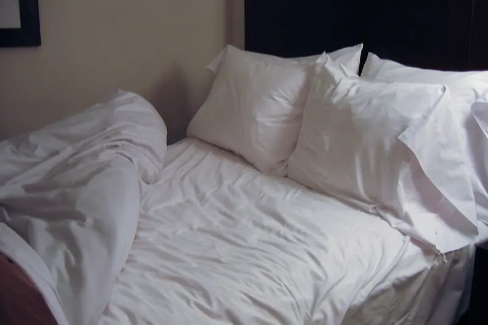

Wohnung fit machen · 6 Min. Lesezeit
Reinigung und Wäsche in der Ferienwohnung: Ablauf, Zeit und Kosten pro Wechsel
Nach jeder Abreise muss die Wohnung bis zum nächsten Check-in wieder wie neu sein, auch nach nur einer Nacht. Wie lange das dauert und was es kostet, hängt vom Ablauf ab. Und seit dem 20. November 2026 dürfen Gastgeber auf Airbnb weniger Arbeit an die Gäste abgeben.

So sieht das Bett nach der Abreise aus. Bei jedem Wechsel kommt die ganze Wäsche weg und das Bett wird frisch bezogen.
- Jeder Aufenthalt braucht eine volle Reinigung, auch eine einzige Nacht.
- Seit dem 20. November 2026 dürfen Gastgeber auf Airbnb von Gästen nicht mehr verlangen, Geschirr zu spülen, Betten abzuziehen oder den Abfall hinauszubringen.
- Auf Airbnb lässt sich eine tiefere Reinigungsgebühr für Aufenthalte von 1 bis 2 Nächten festlegen.
- Ein zweites Set Wäsche pro Bett macht kurze Wechsel am selben Tag erst möglich.
Was bei jedem Wechsel anfällt
Zwischen Check-out und Check-in liegen oft nur wenige Stunden. In dieser Zeit muss die Wohnung gereinigt, die Wäsche gewechselt und das Verbrauchsmaterial aufgefüllt sein. Gäste, die eine Reinigungsgebühr bezahlen, erwarten ausdrücklich einen hohen Standard. Ein Haar im Bad oder ein Krümel im Besteckfach kostet schneller einen Stern als eine kleine Küche.
Bewährt hat sich, mit der Wäsche zu beginnen: alle Betten abziehen und die Tücher einsammeln. So läuft die Waschmaschine, während der Rest der Wohnung gereinigt wird. Wer am selben Tag einen neuen Gast hat, braucht ein Ersatzset Bettwäsche und Tücher, das schon sauber im Schrank liegt.
Der Ablauf in 8 Schritten
- Lüften und Kontrolle: Fenster öffnen, kurz durch alle Räume gehen, Schäden und Fundsachen mit Foto festhalten.
- Wäsche: Betten abziehen, Tücher, Geschirrtücher und Badvorleger einsammeln, erste Maschine starten.
- Küche: Geschirr spülen und einräumen, Kühlschrank leeren, Backofen, Kochfeld, Kaffeemaschine und Abfalleimer reinigen.
- Bad: WC, Dusche, Lavabo, Spiegel und Armaturen, Haare im Abfluss entfernen.
- Oberflächen: Tische, Türgriffe, Lichtschalter, Fernbedienungen, auch unter dem Bett und in den Schubladen.
- Böden: staubsaugen, dann feucht aufnehmen, von hinten zur Tür.
- Betten und Auffüllen: Betten frisch beziehen, Tücher hinlegen, WC-Papier, Seife, Spülmittel, Kaffee und Abfallsäcke auffüllen.
- Schlusskontrolle: Licht, Heizung, Fenster, Fotos aller Räume für die eigene Ablage.
Dazu kommt alle zwei bis drei Monate eine Tiefenreinigung, zum Beispiel Fenster, Schränke innen und alle Geräte.
Neu seit 20. November 2026: Was Gäste beim Check-out noch tun müssen
Airbnb hat die Hausregeln vereinheitlicht. Gastgeber wählen seither aus sieben Standardregeln. Arbeiten, die normalerweise eine Reinigungskraft erledigt, dürfen Sie den Gästen in der Regel nicht mehr vorschreiben. Ausnahmen gibt es nur in besonderen Fällen.
| Dürfen Sie weiter verlangen | Dürfen Sie nicht mehr verlangen |
|---|---|
| Geschirr in die Spüle stellen | Geschirr spülen |
| Benutzte Tücher an einem Ort sammeln | Betten abziehen |
| Abfall und Recycling trennen | Abfall hinausbringen |
| Licht löschen und die Wohnung abschliessen | Gebühren für etwas, das im Inserat schon enthalten ist, oder eigene Bussen |
Wichtig für Ihren Ablauf: Alle Regeln und Bitten müssen vor der Buchung im dafür vorgesehenen Teil des Inserats stehen. Neue Pflichten per Nachricht oder auf einem Zettel in der Wohnung sind nicht mehr erlaubt. Gäste können bei der Bewertung angeben, dass Regeln unerwartet oder übertrieben waren. Inserate mit wiederholt tiefen Bewertungen aus diesem Grund kann Airbnb entfernen.
Für die Reinigung heisst das: Planen Sie pro Wechsel die Zeit für Geschirr und Abfall fest ein, statt mit Hilfe der Gäste zu rechnen. Prüfen Sie auch Ihre Anreise-Nachricht und die Gästemappe auf alte Check-out-Listen.
Was ein Wechsel kostet: Rechenbeispiel
Den grössten Teil der Kosten macht die Arbeitszeit aus. Als Untergrenze für den Stundenlohn hilft der Mindestlohn, den der Bund für Hausangestellte in Privathaushalten festlegt: CHF 20.35 pro Stunde für Ungelernte (Stand 1. Januar 2026). Mit dem Zuschlag für vier Wochen Ferien und einen Feiertag sind es CHF 22.15. Reinigungsfirmen verrechnen mehr, weil Sozialversicherungen, Anfahrt und Material dazukommen.
Beispiel für eine Wohnung mit 2,5 Zimmern. Die Stunden sind Annahmen, messen Sie bei Ihren ersten Wechseln die echte Zeit.
| Annahme | Stunden | Lohn zu CHF 22.15 |
|---|---|---|
| Wechsel nach einem kurzen Aufenthalt | 3 | CHF 66.45 |
| Wechsel nach einer Woche | 4 | CHF 88.60 |
| Wechsel mit Tiefenreinigung | 6 | CHF 132.90 |
Dazu kommen pro Wechsel das Waschen und Trocknen der Wäsche, Reinigungsmittel und Verbrauchsmaterial. Rechnen Sie diese Posten für Ihre Wohnung einmal genau aus, dann kennen Sie Ihre echten Kosten pro Wechsel.
Die Reinigungsgebühr richtig festlegen
Auf Airbnb legen Sie die Reinigungsgebühr pro Aufenthalt fest, im Kalender unter Preise und Gebühren. Sie können zusätzlich eine tiefere Gebühr für Aufenthalte von 1 bis 2 Nächten bestimmen. Welche gilt, entscheidet Airbnb bei der Buchung anhand der Aufenthaltsdauer. Bei Sonderangeboten wird die Gebühr nicht automatisch übernommen, Sie müssen sie selbst hinzufügen.
Gäste sehen die Reinigungsgebühr als eigenen Posten im Gesamtpreis. Airbnb ordnet Inserate nach Gesamtpreis und Qualität im Vergleich zu ähnlichen Inseraten in der Nähe. Eine hohe Gebühr kann also Buchungen kosten. Airbnb empfiehlt, mit der Gebühr die Reinigung zu bezahlen und nicht zusätzlich zu verdienen.
Beispiel: Eine Reinigungsgebühr von CHF 90 macht bei 2 Nächten CHF 45 pro Nacht aus, bei 7 Nächten CHF 12.86 pro Nacht. Darum wirken hohe Gebühren vor allem bei kurzen Aufenthalten teuer. Drei Wege, damit umzugehen:
- tiefere Gebühr für 1 bis 2 Nächte
- Mindestaufenthalt von zwei oder drei Nächten in ruhigen Zeiten
- einen Teil der Reinigung in den Nachtpreis einrechnen
Checkliste vor dem ersten Gast
- Mindestens ein Ersatzset Bettwäsche und Tücher pro Bett, sauber im Schrank
- Reinigungsmaterial an einem Ort, mit Liste zum Nachfüllen
- Schriftlicher Ablauf für die Reinigungskraft, mit Fotos, wie die Wohnung am Schluss aussehen soll
- Eine Vertretung, wenn die Reinigungskraft krank ist oder Ferien hat
- Check-out-Zeit und Check-in-Zeit mit genug Abstand für die Reinigung
- Hausregeln auf Airbnb an die neuen Standardregeln angepasst
- Fotos nach jeder Reinigung, damit Sie Schäden belegen können
Was die Wohnung an Grundausstattung braucht, steht in der Checkliste zum Einrichten. Wie Gäste ohne Schlüsselübergabe ankommen und abreisen, erklärt der Artikel Self-Check-in. Und ob Sie Reinigung und Wäsche selbst organisieren oder abgeben, ist eine der Fragen im Vergleich selbst vermieten oder Verwaltung.
Alpinhost organisiert bei jedem Wechsel Reinigung, Wäsche und Kontrolle mit Fotos. Wie viel Ihre Wohnung nach diesen Kosten einbringt, zeigt der Ertragsrechner. Ein Rechenbeispiel und die Kosten, die oft vergessen gehen, stehen im Artikel Was bringt eine Ferienwohnung wirklich ein?
Häufige Fragen
Was muss bei der Reinigung einer Ferienwohnung gemacht werden?
Bei jedem Wechsel: Wäsche wechseln, Küche und Bad reinigen, Oberflächen und Böden, Verbrauchsmaterial auffüllen und zum Schluss alles kontrollieren. Alle zwei bis drei Monate kommt eine Tiefenreinigung dazu.
Darf ich Airbnb-Gäste bitten, die Betten abzuziehen?
Seit dem 20. November 2026 in der Regel nicht mehr. Airbnb erlaubt nur noch angemessene Bitten wie Geschirr in die Spüle stellen, benutzte Tücher sammeln, Abfall trennen, Licht löschen und abschliessen. Alle Regeln müssen vor der Buchung im Inserat stehen.
Wie hoch sollte die Reinigungsgebühr sein?
So hoch wie Ihre echten Kosten pro Wechsel, nicht höher. Airbnb zeigt die Gebühr im Gesamtpreis und vergleicht diesen mit ähnlichen Inseraten. Für Aufenthalte von 1 bis 2 Nächten können Sie eine tiefere Gebühr festlegen.
Wie viel Bettwäsche brauche ich pro Bett?
Mindestens zwei Sets: eines auf dem Bett und eines sauber im Schrank. So ist ein Wechsel am selben Tag möglich, auch wenn die Wäsche vom letzten Gast noch nicht trocken ist.
Ihre Wohnung
Was bringt Ihre Ferienwohnung?
Der Rechner nutzt echte Marktdaten von 24 Schweizer Orten.
Ertrag berechnen Wohnung kostenlos prüfen lassenWhatsApp und Telefon: +41 76 275 81 96
E-Mail: info@alpinhost.ch